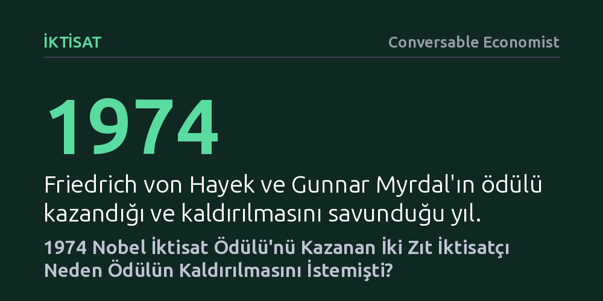

IKTISAT · Conversable Economist · 2026-10-13
1974 Nobel İktisat Ödülü’nü paylaşan zıt görüşlerdeki iki iktisatçı Friedrich Hayek ve Gunnar Myrdal, ödülün iktisatçılara hak etmedikleri ölçüsüz bir kamusal güç yüklediğini savunarak kaldırılmasını talep etmişti.
İktisatçıların her toplumsal konuda uzman sayılarak siyasete yön veren mutlak otoriteler haline getirilmesinin sakıncalarını bizzat disiplinin zirvesindeki isimlerin ağzından gösterir.

1974 yılında İsveç Kraliyet Bilimler Akademisi, Nobel İktisat Ödülü’nü altıncı kez verirken birbirine taban tabana zıt iki iktisatçıyı aynı kürsüde buluşturdu: Serbest piyasa kuramcısı Friedrich von Hayek ile kurumsalcı ve sosyal demokrat yaklaşımlarıyla bilinen Gunnar Myrdal. Akademi, her iki ismi para teorisi ve ekonomik dalgalanmaların yanı sıra iktisadi ve kurumsal olguların karşılıklı etkileşimini çözümlemelerindeki öncülükleri nedeniyle ödüllendirmişti.
Ancak kamuoyunda asıl yankı uyandıran gelişme, düşünsel olarak neredeyse hiçbir ortak noktası bulunmayan bu iki akademisyenin aynı şaşırtıcı talepte birleşmesi oldu: Her iki düşünür de ekonomi alanında verilen Nobel Ödülü’nün bütünüyle kaldırılması gerektiğini açıkça dile getirdi. Geleneksel doğa bilimlerinin aksine iktisadın böyle bir payeyle taçlandırılması, iki isme göre de disiplinin doğasına aykırı sonuçlar doğuruyordu.
Hayek, 10 Aralık 1974’teki Nobel ziyafetinde yaptığı konuşmada ödüle neden temelden karşı olduğunu ayrıntılarıyla anlattı. Kendisine önceden danışılmış olsaydı böyle bir ödülün ihdas edilmesine kesinlikle karşı çıkacağını belirten düşünür, en büyük çekincesini iktisatçılara yüklenen yapay saygınlıkla açıkladı.
Hayek’e göre Nobel unvanı, doğa bilimlerinde öncelikle meslektaşlar arasındaki teknik bir değerlendirmedir ve alan dışına taşan bir fizikçiyi kendi uzman çevresi hızla dizginler. Oysa iktisatçının asıl etkisi bürokratlar, siyasetçiler, gazeteciler ve kamuoyu üzerindedir. Dar bir kuramsal katkı sunan akademisyen, kamuoyu nezdinde toplumun tüm dertlerine çare üretebilecek evrensel bir deha gibi algılanmaya başlar. Zamanla araştırmacı da bu yanılsamaya kapılarak uzmanlığı dışındaki meselelerde fikir beyan etmeyi toplumsal bir görev sanır.
Bu çarpık etkiyi özetleyen Hayek, konuşmasında şu kritik tespiti yapmıştı: "Nobel Ödülü, bir bireye iktisat alanında hiçbir insanın sahip olmaması gereken bir otorite bahşediyor." Hayek, bu kontrolsüz gücün önüne geçmek adına iktisatçıların uzmanlık sınırlarını aşmayacaklarına dair hekimlerinkine benzer bir mesleki alçakgönüllülük yemini etmelerini önerdi.
Ödülün diğer ortağı Gunnar Myrdal ise meselenin siyasi kutuplaşma ve ideolojik etiketleme boyutuna tepkiliydi. İktisadi araştırmaların hiçbir zaman değer yargılarından bağımsız olamayacağını savunan Myrdal, komitenin kendisini piyasa savunucusu Hayek ile aynı anda ödüllendirmesini yapay bir denge oyunu olarak gördü. Küresel basının kendisini salt bir radikal, Hayek’i ise onun zıddı olarak resmetmesi, çok katmanlı bilimsel çözümlemeleri basit bir ideolojik kavgaya indirgiyordu.
Kararın ardından dünyanın dört bir yanından meslektaşlarının Hayek’e ödül verilmesini eleştiren binlerce telgrafını alan Myrdal, akademinin tercihinin bilimsel değil siyasi bir eylem olarak yorumlandığını fark etti. Paraya ihtiyacı olmadığı için ödül gelirini bağışlayan Myrdal, sonradan yaptığı değerlendirmelerde, politik iktisadın doğa bilimleri gibi mutlak kurallarla taltif edilemeyeceğini savunarak ödülü en baştan reddetmiş olması gerektiğini söyledi.
1974’te her iki ödül sahibinin yaptığı çağrılara rağmen Nobel İktisat Ödülü kaldırılmadı; aksine küresel ekonomi politikalarını meşrulaştıran en güçlü kurumlardan biri haline geldi. Ancak Hayek ve Myrdal’ın yarım asır önce dile getirdiği tehlikeler bugün de geçerliliğini koruyor: Komitenin belirli bir iktisat doktrinini onaylayıp onaylamadığı tartışması ve kamuoyunun ödüllü iktisatçıları her konunun uzmanı sayma eğilimi devam ediyor.
Modern dünyada hiçbir iktisatçının bu felsefi kaygılarla ödülü geri çevirmesi beklenmese de 1974 tartışması kritik bir ders barındırıyor: Karmaşık toplumsal süreçleri inceleyen bir disiplinde mutlak otorite arayışı, bilimin sınırlarını aşındırarak toplumu uzmanlık yanılsamasına hapsediyor.